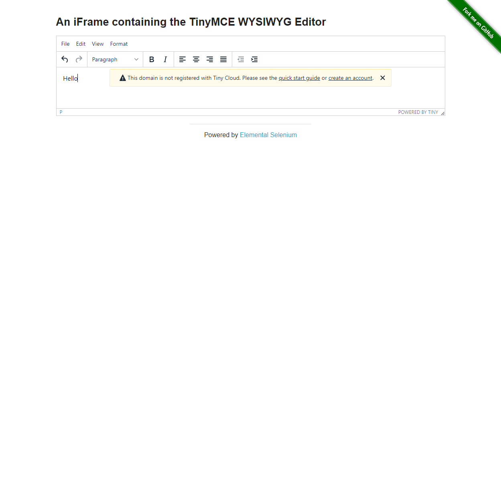
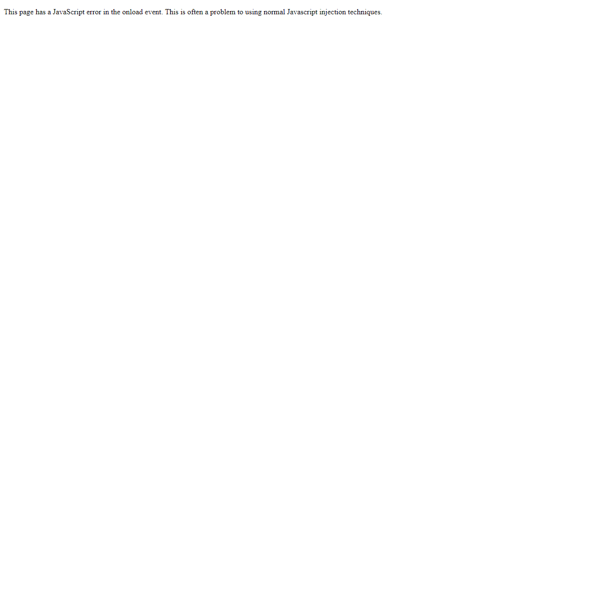

Report generated on 24-Apr-2023 at 21:28:02 by pytest-html v3.2.0
| Packages | {"pluggy": "1.0.0", "pytest": "7.2.2"} |
| Platform | Windows-10-10.0.19045-SP0 |
| Plugins | {"html": "3.2.0", "metadata": "2.0.4"} |
| Python | 3.11.2 |
21 tests ran in 194.95 seconds.
(Un)check the boxes to filter the results.
19 passed, 0 skipped, 2 failed, 0 errors, 0 expected failures, 0 unexpected passes| Result | Test | Duration | Links |
|---|---|---|---|
| No results found. Try to check the filters | |||
| Failed | tests/test_iframe.py::TestIframe::test_iframe_text | 11.05 | |
|
 self = <tests.test_iframe.TestIframe object at 0x000001E820AFD6D0> browser = <selenium.webdriver.chrome.webdriver.WebDriver (session="c0519b51aac2a907396cba4fd8c6bac8")> def test_iframe_text(self, browser): try: # Navigate to the iframe page browser.get("http://localhost:7080/iframe") # Switch to the iframe iframe = browser.find_element(By.CSS_SELECTOR, "iframe") browser.switch_to.frame(iframe) # Wait for the element to be visible wait = WebDriverWait(browser, 10) editor = wait.until(EC.visibility_of_element_located((By.ID, "tinymce"))) # Find the editable field and type some text editor.clear() editor.send_keys("Hello") time.sleep(2) # Switch back to the main frame browser.switch_to.default_content() # Verify that the typed text is displayed > assert browser.find_element(By.XPATH, "(//p[normalize-space()='Hello'])[1]").text == "Hello" tests\test_iframe.py:34: _ _ _ _ _ _ _ _ _ _ _ _ _ _ _ _ _ _ _ _ _ _ _ _ _ _ _ _ _ _ _ _ _ _ _ _ _ _ _ _ ..\..\AppData\Local\Programs\Python\Python311\Lib\site-packages\selenium\webdriver\remote\webdriver.py:830: in find_element return self.execute(Command.FIND_ELEMENT, {"using": by, "value": value})["value"] ..\..\AppData\Local\Programs\Python\Python311\Lib\site-packages\selenium\webdriver\remote\webdriver.py:440: in execute self.error_handler.check_response(response) _ _ _ _ _ _ _ _ _ _ _ _ _ _ _ _ _ _ _ _ _ _ _ _ _ _ _ _ _ _ _ _ _ _ _ _ _ _ _ _ self = <selenium.webdriver.remote.errorhandler.ErrorHandler object at 0x000001E821363150> response = {'status': 404, 'value': '{"value":{"error":"no such element","message":"no such element: Unable to locate element: {\...\n\\tRtlGetAppContainerNamedObjectPath [0x77317B6E+286]\\n\\tRtlGetAppContainerNamedObjectPath [0x77317B3E+238]\\n"}}'} def check_response(self, response: Dict[str, Any]) -> None: """Checks that a JSON response from the WebDriver does not have an error. :Args: - response - The JSON response from the WebDriver server as a dictionary object. :Raises: If the response contains an error message. """ status = response.get("status", None) if not status or status == ErrorCode.SUCCESS: return value = None message = response.get("message", "") screen: str = response.get("screen", "") stacktrace = None if isinstance(status, int): value_json = response.get("value", None) if value_json and isinstance(value_json, str): import json try: value = json.loads(value_json) if len(value.keys()) == 1: value = value["value"] status = value.get("error", None) if not status: status = value.get("status", ErrorCode.UNKNOWN_ERROR) message = value.get("value") or value.get("message") if not isinstance(message, str): value = message message = message.get("message") else: message = value.get("message", None) except ValueError: pass exception_class: Type[WebDriverException] if status in ErrorCode.NO_SUCH_ELEMENT: exception_class = NoSuchElementException elif status in ErrorCode.NO_SUCH_FRAME: exception_class = NoSuchFrameException elif status in ErrorCode.NO_SUCH_SHADOW_ROOT: exception_class = NoSuchShadowRootException elif status in ErrorCode.NO_SUCH_WINDOW: exception_class = NoSuchWindowException elif status in ErrorCode.STALE_ELEMENT_REFERENCE: exception_class = StaleElementReferenceException elif status in ErrorCode.ELEMENT_NOT_VISIBLE: exception_class = ElementNotVisibleException elif status in ErrorCode.INVALID_ELEMENT_STATE: exception_class = InvalidElementStateException elif ( status in ErrorCode.INVALID_SELECTOR or status in ErrorCode.INVALID_XPATH_SELECTOR or status in ErrorCode.INVALID_XPATH_SELECTOR_RETURN_TYPER ): exception_class = InvalidSelectorException elif status in ErrorCode.ELEMENT_IS_NOT_SELECTABLE: exception_class = ElementNotSelectableException elif status in ErrorCode.ELEMENT_NOT_INTERACTABLE: exception_class = ElementNotInteractableException elif status in ErrorCode.INVALID_COOKIE_DOMAIN: exception_class = InvalidCookieDomainException elif status in ErrorCode.UNABLE_TO_SET_COOKIE: exception_class = UnableToSetCookieException elif status in ErrorCode.TIMEOUT: exception_class = TimeoutException elif status in ErrorCode.SCRIPT_TIMEOUT: exception_class = TimeoutException elif status in ErrorCode.UNKNOWN_ERROR: exception_class = WebDriverException elif status in ErrorCode.UNEXPECTED_ALERT_OPEN: exception_class = UnexpectedAlertPresentException elif status in ErrorCode.NO_ALERT_OPEN: exception_class = NoAlertPresentException elif status in ErrorCode.IME_NOT_AVAILABLE: exception_class = ImeNotAvailableException elif status in ErrorCode.IME_ENGINE_ACTIVATION_FAILED: exception_class = ImeActivationFailedException elif status in ErrorCode.MOVE_TARGET_OUT_OF_BOUNDS: exception_class = MoveTargetOutOfBoundsException elif status in ErrorCode.JAVASCRIPT_ERROR: exception_class = JavascriptException elif status in ErrorCode.SESSION_NOT_CREATED: exception_class = SessionNotCreatedException elif status in ErrorCode.INVALID_ARGUMENT: exception_class = InvalidArgumentException elif status in ErrorCode.NO_SUCH_COOKIE: exception_class = NoSuchCookieException elif status in ErrorCode.UNABLE_TO_CAPTURE_SCREEN: exception_class = ScreenshotException elif status in ErrorCode.ELEMENT_CLICK_INTERCEPTED: exception_class = ElementClickInterceptedException elif status in ErrorCode.INSECURE_CERTIFICATE: exception_class = InsecureCertificateException elif status in ErrorCode.INVALID_COORDINATES: exception_class = InvalidCoordinatesException elif status in ErrorCode.INVALID_SESSION_ID: exception_class = InvalidSessionIdException elif status in ErrorCode.UNKNOWN_METHOD: exception_class = UnknownMethodException else: exception_class = WebDriverException if not value: value = response["value"] if isinstance(value, str): raise exception_class(value) if message == "" and "message" in value: message = value["message"] screen = None # type: ignore[assignment] if "screen" in value: screen = value["screen"] stacktrace = None st_value = value.get("stackTrace") or value.get("stacktrace") if st_value: if isinstance(st_value, str): stacktrace = st_value.split("\n") else: stacktrace = [] try: for frame in st_value: line = frame.get("lineNumber", "") file = frame.get("fileName", "<anonymous>") if line: file = f"{file}:{line}" meth = frame.get("methodName", "<anonymous>") if "className" in frame: meth = f"{frame['className']}.{meth}" msg = " at %s (%s)" msg = msg % (meth, file) stacktrace.append(msg) except TypeError: pass if exception_class == UnexpectedAlertPresentException: alert_text = None if "data" in value: alert_text = value["data"].get("text") elif "alert" in value: alert_text = value["alert"].get("text") raise exception_class(message, screen, stacktrace, alert_text) # type: ignore[call-arg] # mypy is not smart enough here > raise exception_class(message, screen, stacktrace) E selenium.common.exceptions.NoSuchElementException: Message: no such element: Unable to locate element: {"method":"xpath","selector":"(//p[normalize-space()='Hello'])[1]"} E (Session info: chrome=112.0.5615.138) E Stacktrace: E Backtrace: E (No symbol) [0x00E7DCE3] E (No symbol) [0x00E139D1] E (No symbol) [0x00D24DA8] E (No symbol) [0x00D5019F] E (No symbol) [0x00D503AB] E (No symbol) [0x00D7EE62] E (No symbol) [0x00D6AF14] E (No symbol) [0x00D7D57C] E (No symbol) [0x00D6ACC6] E (No symbol) [0x00D46F68] E (No symbol) [0x00D480CD] E GetHandleVerifier [0x010F3832+2506274] E GetHandleVerifier [0x01129794+2727300] E GetHandleVerifier [0x0112E36C+2746716] E GetHandleVerifier [0x00F26690+617600] E (No symbol) [0x00E1C712] E (No symbol) [0x00E21FF8] E (No symbol) [0x00E220DB] E (No symbol) [0x00E2C63B] E BaseThreadInitThunk [0x767A0099+25] E RtlGetAppContainerNamedObjectPath [0x77317B6E+286] E RtlGetAppContainerNamedObjectPath [0x77317B3E+238] ..\..\AppData\Local\Programs\Python\Python311\Lib\site-packages\selenium\webdriver\remote\errorhandler.py:245: NoSuchElementException -------------------------------Captured log call-------------------------------- ERROR tests.test_iframe:test_iframe.py:40 TestIframe Failed | |||
| Failed | tests/test_javascript_error.py::TestJsError::test_find_js_error | 16.15 | |
|
 self = <tests.test_javascript_error.TestJsError object at 0x000001E820B04750> browser = <selenium.webdriver.chrome.webdriver.WebDriver (session="2be518fa22f5897d2ef8a68b48929dd3")> def test_find_js_error(self, browser): try: # Navigate to the JavaScript Error page browser.get("http://localhost:7080/javascript_error") # Wait for the page to finish loading wait = WebDriverWait(browser, 10) > wait.until(EC.presence_of_element_located((By.XPATH, "//body[contains(text(),'Cannot read property')]"))) tests\test_javascript_error.py:17: _ _ _ _ _ _ _ _ _ _ _ _ _ _ _ _ _ _ _ _ _ _ _ _ _ _ _ _ _ _ _ _ _ _ _ _ _ _ _ _ self = <selenium.webdriver.support.wait.WebDriverWait (session="2be518fa22f5897d2ef8a68b48929dd3")> method = <function presence_of_element_located.<locals>._predicate at 0x000001E8213A39C0>, message = '' def until(self, method, message: str = ""): """Calls the method provided with the driver as an argument until the \ return value does not evaluate to ``False``. :param method: callable(WebDriver) :param message: optional message for :exc:`TimeoutException` :returns: the result of the last call to `method` :raises: :exc:`selenium.common.exceptions.TimeoutException` if timeout occurs """ screen = None stacktrace = None end_time = time.monotonic() + self._timeout while True: try: value = method(self._driver) if value: return value except self._ignored_exceptions as exc: screen = getattr(exc, "screen", None) stacktrace = getattr(exc, "stacktrace", None) time.sleep(self._poll) if time.monotonic() > end_time: break > raise TimeoutException(message, screen, stacktrace) E selenium.common.exceptions.TimeoutException: Message: E Stacktrace: E Backtrace: E (No symbol) [0x00E7DCE3] E (No symbol) [0x00E139D1] E (No symbol) [0x00D24DA8] E (No symbol) [0x00D5019F] E (No symbol) [0x00D503AB] E (No symbol) [0x00D7EE62] E (No symbol) [0x00D6AF14] E (No symbol) [0x00D7D57C] E (No symbol) [0x00D6ACC6] E (No symbol) [0x00D46F68] E (No symbol) [0x00D480CD] E GetHandleVerifier [0x010F3832+2506274] E GetHandleVerifier [0x01129794+2727300] E GetHandleVerifier [0x0112E36C+2746716] E GetHandleVerifier [0x00F26690+617600] E (No symbol) [0x00E1C712] E (No symbol) [0x00E21FF8] E (No symbol) [0x00E220DB] E (No symbol) [0x00E2C63B] E BaseThreadInitThunk [0x767A0099+25] E RtlGetAppContainerNamedObjectPath [0x77317B6E+286] E RtlGetAppContainerNamedObjectPath [0x77317B3E+238] ..\..\AppData\Local\Programs\Python\Python311\Lib\site-packages\selenium\webdriver\support\wait.py:95: TimeoutException -------------------------------Captured log call-------------------------------- ERROR tests.test_javascript_error:test_javascript_error.py:27 TestJsError Failed | |||
| Passed | tests/test_checkbox.py::TestCheckboxes::test_checkbox1_checked | 3.63 | |
|
-------------------------------Captured log setup------------------------------- INFO tests.test_checkbox:test_checkbox.py:16 Checkbox setup Successful -------------------------------Captured log call-------------------------------- INFO tests.test_checkbox:test_checkbox.py:22 TestCheckbox1Checked Successful | |||
| Passed | tests/test_checkbox.py::TestCheckboxes::test_checkbox2_unchecked | 5.18 | |
|
-------------------------------Captured log setup------------------------------- INFO tests.test_checkbox:test_checkbox.py:16 Checkbox setup Successful -------------------------------Captured log call-------------------------------- INFO tests.test_checkbox:test_checkbox.py:28 Test Checkbox2 Unchecked Successful | |||
| Passed | tests/test_context_menu.py::TestContextMenu::test_context_menu_alert | 3.39 | |
|
-------------------------------Captured log call-------------------------------- INFO tests.test_context_menu:test_context_menu.py:17 Context Menu Setup Successful INFO tests.test_context_menu:test_context_menu.py:28 Context Menu Test Passed | |||
| Passed | tests/test_drag_and_drop.py::TestDragAndDrop::test_drag_and_drop | 12.23 | |
|
-------------------------------Captured log call-------------------------------- INFO tests.test_drag_and_drop:test_drag_and_drop.py:33 Drag and Drop Test Passed | |||
| Passed | tests/test_dropdown.py::TestDropdown::test_select_option | 7.02 | |
|
-------------------------------Captured log call-------------------------------- INFO tests.test_dropdown:test_dropdown.py:38 Dropdown Test Passed | |||
| Passed | tests/test_dynamic_content.py::TestDynamicContent::test_content_changes_with_page_reload | 8.02 | |
|
-------------------------------Captured log setup------------------------------- INFO tests.test_dynamic_content:test_dynamic_content.py:19 Dynamic Content Setup Successful -------------------------------Captured log call-------------------------------- INFO tests.test_dynamic_content:test_dynamic_content.py:62 Dynamic Content Test Passed | |||
| Passed | tests/test_dynamic_controls.py::TestDynamicControls::test_remove_add_checkbox_and_toggle_textbox | 24.55 | |
|
-------------------------------Captured log call-------------------------------- INFO tests.test_dynamic_controls:test_dynamic_controls.py:45 Dynamic Controls Test Passed | |||
| Passed | tests/test_dynamic_loading.py::TestDynamicLoading::test_dynamic_loading | 11.61 | |
|
-------------------------------Captured log call-------------------------------- INFO tests.test_dynamic_loading:test_dynamic_loading.py:31 Dynamic Loading Test Passed | |||
| Passed | tests/test_file_download.py::TestFileDownload::test_file_download | 7.12 | |
|
-------------------------------Captured log call-------------------------------- INFO tests.test_file_download:test_file_download.py:30 TestFileDownload Passed | |||
| Passed | tests/test_file_upload.py::TestFileUpload::test_file_upload | 5.70 | |
|
-------------------------------Captured log call-------------------------------- INFO tests.test_file_upload:test_file_upload.py:29 File Upload Passed | |||
| Passed | tests/test_floating_menu.py::TestFloatingMenu::test_floating_menu | 5.47 | |
|
-------------------------------Captured log call-------------------------------- INFO tests.test_floating_menu:test_floating_menu.py:31 Floating Menu Test Passed | |||
| Passed | tests/test_java_scripts_alerts.py::TestJavaScriptAlerts::test_js_alert | 3.66 | |
|
-------------------------------Captured log call-------------------------------- INFO tests.test_java_scripts_alerts:test_java_scripts_alerts.py:27 TestJavaScriptAlerts test_js_alert Passed | |||
| Passed | tests/test_java_scripts_alerts.py::TestJavaScriptAlerts::test_js_confirm | 3.48 | |
|
-------------------------------Captured log call-------------------------------- INFO tests.test_java_scripts_alerts:test_java_scripts_alerts.py:51 TestJavaScriptAlerts test_js_confirm Passed | |||
| Passed | tests/test_java_scripts_alerts.py::TestJavaScriptAlerts::test_js_prompt | 3.17 | |
|
-------------------------------Captured log call-------------------------------- INFO tests.test_java_scripts_alerts:test_java_scripts_alerts.py:80 TestJavaScriptAlerts test_js_prompt Passed | |||
| Passed | tests/test_login_failure.py::TestLoginFailure::test_login_failure_message | 6.61 | |
|
-------------------------------Captured log setup------------------------------- INFO tests.test_login_failure:test_login_failure.py:26 Login Failure Setup Successful -------------------------------Captured log call-------------------------------- INFO tests.test_login_failure:test_login_failure.py:36 Login Failure Test Passed | |||
| Passed | tests/test_login_success.py::TestLoginSuccess::test_login_success_message | 6.14 | |
|
-------------------------------Captured log setup------------------------------- INFO tests.test_login_success:test_login_success.py:32 Login Success Setup Successful -------------------------------Captured log call-------------------------------- INFO tests.test_login_success:test_login_success.py:42 Login Success Test Passed | |||
| Passed | tests/test_mouse_hover.py::TestMouseHover::test_mouse_hover | 6.88 | |
|
-------------------------------Captured log call-------------------------------- INFO tests.test_mouse_hover:test_mouse_hover.py:40 TestMouseHover Passed | |||
| Passed | tests/test_notification_message.py::TestNotificationMessage::test_notification_message | 4.47 | |
|
------------------------------Captured stdout call------------------------------ Notification Message Test Completed -------------------------------Captured log call-------------------------------- WARNING tests.test_notification_message:test_notification_message.py:36 TestNotificationMessage Passed with Warning: Action unsuccessful message displayed | |||
| Passed | tests/test_open_new_tab.py::TestNewTab::test_open_new_tab | 3.43 | |
|
-------------------------------Captured log call-------------------------------- INFO tests.test_open_new_tab:test_open_new_tab.py:25 TestNewTab Passed | |||